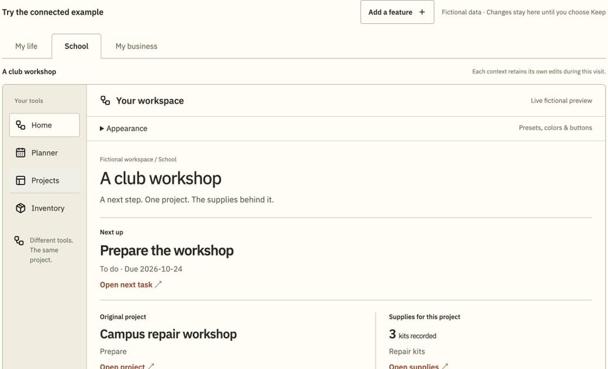
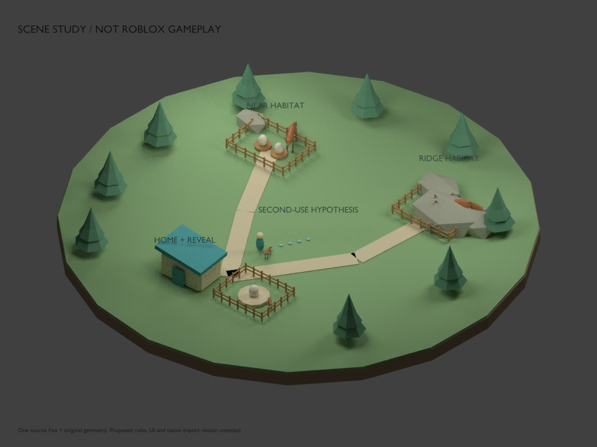

Mechanical engineer & software builder
Dylan
Becchetti.
I build tools for the work people actually do.
At Cardinal Glass, I built the tracker an R&D line used for shift debriefs. On my own time, I spent a year building a reproducible futures research system. I designed the gear assembly on this page in OpenSCAD for my team capstone.
Lehigh B.S. ’26 · U.S. remote from January 2027
Engineering automation, systems and software tooling

Ring turnsPlanets spinSigns orbit
Three places to start
01 Independent research and execution infrastructure
Midas Futures.
I’ve led Midas from its first equities scheduler through a year of daily work on futures research and execution. I built replay and forward evaluation around a shared strategy engine, then verified that it reproduced a sealed historical reference while keeping order authority in a separate layer.
Retained run / Historical comparison
228/228
Session decisions matched
- Sealed event lifecycles
- 225
- Missing, new or mismatched events
- 0 / 0 / 0
Research
Make the next run explain the last one.
I built replay around a simulated clock, isolated state and a broker stand-in that refuses order changes. One retained walk-forward study stopped before selection when required data was missing, leaving its final holdout untouched.
Execution
Give orders their own controls.
Paper execution stays disarmed until it sees a matching authorization and qualification record. Reconciliation checks the order ID, tag, contract and fills against the original intent. Missing fill data stays unknown.
- 01 / EQUITIES
Get the whole loop working.
I started with scheduled Alpaca workflows, trade monitoring, daily state and parameter experiments. That first version made the trade lifecycle visible and exposed how tightly the strategy and execution were coupled.
- 02 / FUTURES
Take control of the data.
I moved to ProjectX market streams and historical candles, with a Raspberry Pi deployment path. I also added an opening-range strategy that reused order plumbing without inheriting the original strategy’s assumptions.
- 03 / RESEARCH + EXECUTION
Share decisions. Separate authority.
Replay and forward evaluation disagreed on which bars counted toward volatility and which price to use at exit. I moved both to one state machine that consumes completed bars in order and checked it against the sealed historical reference.
Python · Strategy state machines · Event replay · Broker reconciliation · Research provenance
02 Product and software / Founder & Product Lead
Operalith.
I started Operalith because I wanted one place to see what’s next in a workshop, which job it belongs to, and whether the supplies are there. I designed and built the workspace, from the navigation down to how PostgreSQL handles a retry or a stale edit.

Product
One workshop, five tools.
Planner, projects, inventory, equipment loans and enquiries can live together. The overview takes you to the exact task, project or stock record so you can follow up where the work lives.
Account beta
A save you can recover.
I designed the save path to handle two things differently: a retry of a request already accepted, and a new edit made from an out-of-date tab. PostgreSQL stores the original result so a retry can return it. A revision check rejects a stale edit before it overwrites anything.
Next.js · PostgreSQL · Revision checks · Audit history · Product design
03 Manufacturing / Three summer internships
Cardinal Glass.
In my third summer at Cardinal, I built an Excel/VBA production tracker for an R&D line. I brought separate source files together into a daily view the team used for shift debriefs. The project was mine from problem definition through handoff.
01 / Planned work
| Part | Op. | Qty |
|---|---|---|
| 101 | Assembly | 8 |
| 102 | Inspection | 6 |
| 103 | Assembly | 4 |
| 104 | Inspection | 10 |
02 / Reported updates
| Part | Status |
|---|---|
| 101 | In progress |
| 102 | Complete |
| 104 | Awaiting review |
| No ID | Complete |
03 / Daily shift view
| Part | What the lead sees |
|---|---|
| 101 | In progress |
| 102 | Complete |
| 103 | No update received |
| 104 | Awaiting review |
| No ID | Held for review |
2025 / Process data
The blank cell was a clue.
On a separate scorecard, I found that a merged header contained only a date range. After the revised calculation worked in one cell, I reproduced a second failure: dragging or copying the cell returned blank, while pasting the formula directly worked. In another 2025 assignment, I used a hood and micromanometer and questioned whether airflow alone could identify a degrading filter.
2024 / Continuous improvement
Make the build teachable.
I wrote illustrated work instructions for customer sample assemblies and worked on spare-parts inventory and storage layouts.
2023 / Engineering
Make space for the equipment.
I inspected pilot-line equipment, analyzed data in Minitab and drafted equipment layouts in AutoCAD. I also contributed to design failure mode and effects analysis discussions.
04 Mechanical design / Year-long Lehigh team capstone
Wilbur Powerhouse.
Our team designed a ceiling-hung kinetic sculpture that turns a planetary gearset into moving signage. I designed and iterated the parametric OpenSCAD assembly, the carrier and wheel interfaces, and contributed to material choices, CNC preparation and fit checks.
How it moves
The outer ring drives the show.
The motor pinion turns the outer ring. With the sun fixed, six planets spin while the carrier rotates. Each hanging sign follows its planet.
What I changed
More room for the wheels.
Widening the wheel path while retaining the gear tooth profile moved the drive and enlarged the installation envelope. I revised the ring and carrier interfaces around the new geometry.
How we checked it
Put a clash into the model.
I wanted to know whether our clearance check could catch a real interference, so the review included a model with a deliberately introduced overlap.
Parametric assembly, carrier and wheel interfaces in OpenSCAD.
CNC-cut planet gear and early welded assembly.
Nominal CAD clearance and an intentional overlap. Installation and loaded performance remain outside that check.
OpenSCAD · Kinematics · Tolerance and fit · Materials · CNC preparation
05 Product research / Reproducible game production
Scanned Leverage and Optimized Production.
I started this project to find out what should be reused when building a game: which ideas are worth testing, which components travel between concepts, and whether I can prove exactly what went into each build.

Build proof
Same source. Two different places.
I built a configurable Python production pipeline. It compiled Copper Yard and Stone Yard into distinct Roblox place files using the same hash-pinned Luau components. Five focused CI checks covered source binding, configuration differences and invalid input.
Product judgment
Passing CI doesn’t make it fun.
I held back the collector concept shown here after reviewing the game itself. The build checks answered what the tooling had produced; judging the game concept was a different test.
Python · Pydantic · Luau · Artifact provenance · GitHub Actions
06 Product concept / Search prototype
Formsby.
I wanted to give people one place to describe what they needed, then help them find the right listing or resource wherever it already lived. Housing was my first test of whether that idea could work.
Early housing test / Run notes illustrated
- 01Collect a requestCapture the lead and source.
- 02Extract the criteriaExample: two bedrooms, a maximum rent and a move-in window.
- 03Find a listing that fitsReject generic directory pages. No valid match in the retained run.
What I built
Separate the search from the request.
The later Next.js prototype accepts structured criteria, queues the search, evaluates listings and persists results in PostgreSQL for private access. My early run notes show request extraction working and no valid apartment match. That helped set the bar for what the search needed to return.
What I designed next
One engine, several front doors.
I moved from a lead-discovery experiment toward a search the user starts and a private page they control. I planned the matching engine first, then public intake and a community-resource version. The wider network stayed at the planning stage.
Next.js · Prisma · PostgreSQL · Inngest · Search quality
DB Available January 2027 / U.S. remote
Let’s talk shop.
I’m a May 2026 Lehigh mechanical engineering graduate, staying an extra semester for my Materials Science and Engineering minor. I’m looking for work where I can build useful tools, get close to the problem, and see the result through.